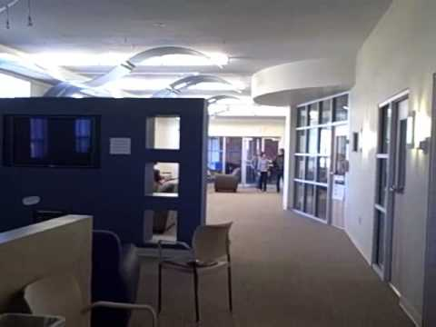

| The Schlobby | |
|---|---|
|

The Schlobby
|
|
| Established | 1966 |
| Location | Schlosser Hall, Elizabethtown, PA, USA |
The Schlobby, known formally as the Schlosser Lobby, is the lobby of the Schlosser Residence Hall at Elizabethtown College, and the foundational location of The Boys. The Schlobby is know for its countless floods and Monday night football related temper tantrums.
The Schlobby was where the majority of The Boys met, starting in 2021. Soon following the inital founding of The Boys, the Schlobby flooded. This led to several months of repairs, forcing the original Boys to engage in tomfoolery elsewhere.
Following the completion of repairs, Cameron Impostor returned to the Schlobby following a game of bingo. It was this night where SusFeed was originally created, with SusFeed Video being founded in the same location shortly thereafter. The Schlobby was the home to various antics until late 2022, where most shenanigans were moved to the M'lobby following a conflict within the Schlobby. Despite this move, The Boys continued to take yearly photos in front of the Schlobby until 2025.
The Schlobby is notorious for its various floods. These floods have impeded many possible shenanigans The Boys had planned, though have fostered others. These floods are so notorious that multiple news publications have detailed them, including SusFeed News.
The Smeff joke was also started in the Schlobby, being created by Cameron Impostor during a game of Super Smash Bros Brawl.
{kind=link}